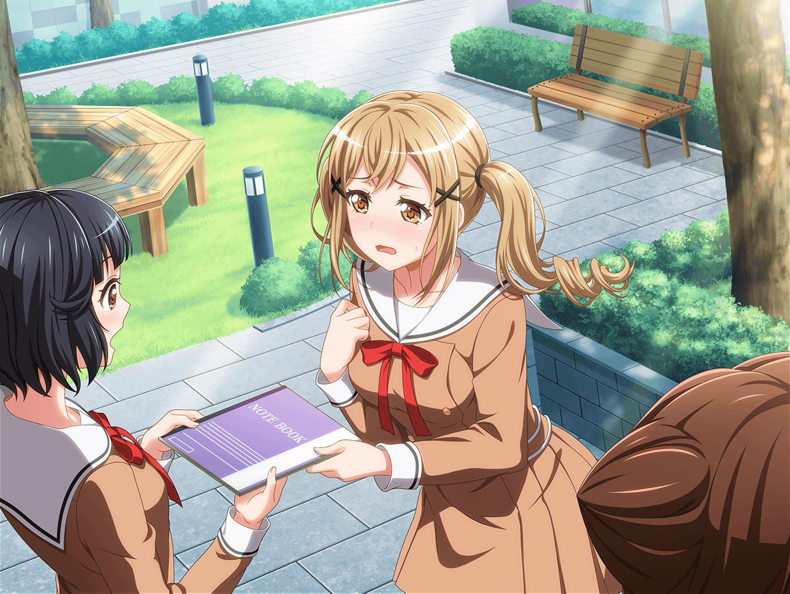

翌日
花咲川女子学園 1-A教室
香澄
おっはよー、さーや！
沙綾
あ、香澄、おはよう。
……ふふ～ん♪
香澄
ん？ どうしたの？
なんか機嫌良さそうにしてるけど
沙綾
その理由は、これでーす
りみ
香澄ちゃん、おはよう！
香澄
わぁ、りみりん！ 学校来れたのっ！？
風邪治ったんだ！？ よかった～！
りみ
いろいろ心配かけちゃって、ごめんね……
香澄
ううん！ 謝らないでよ！
りみりんが学校に来てくれただけで、すっごく嬉しいんだから！
沙綾
そうだよ！
まだおたえは来てないけど、
きっと喜ぶと思うよ
香澄
あ、そうだ！
りみりんが来たこと、有咲にも言ってくるね！
りみ
有咲ちゃんに……？
香澄
有咲もきっと喜んで、飛んでくると思う！
ちょっと待ってて

花咲川女子学園 廊下
香澄
有咲～！
ちょっとこっち来て！
有咲
な、なんだよ？
朝からテンションたけーなー……っ
香澄
だって有咲が絶対喜ぶニュースがあるから！
なんと、今日ね……
りみりんが学校に来ましたーっ！
有咲
そっか……っ。
りみ、風邪治ったんだ……よかった……
香澄
有咲、言ってたよね？ りみりんに謝りたいって！
だから今から行こ？ 私も一緒に行くから
有咲
あ、あ～、待った。やっぱ今はダメだ……
昼休みまで時間くんねーか？
香澄
え、有咲……？
もしかして、まだりみりんに会いづらい感じ？
有咲
こっちにもいろいろ準備があるんだって……っ
香澄
わ、わかった……
それじゃあ昼休みね！ 絶対だよ！
有咲
お、おう……

昼休み
花咲川女子学園 中庭
沙綾
……有咲、遅いね。
昼休みになってから、もう１０分くらいたってるけど……
りみ
やっぱり、私と顔合わせづらいのかな……？
こんなことなら私の方から、
有咲ちゃんのところに行けばよかった……
香澄
私、ちょっと行って連れてこようかな？
有咲
あ、悪い悪い！
ちょっと遅れちゃった
香澄
有咲来たー！
も～、遅いから心配しちゃったじゃん
有咲
悪かったって。
こっちにもちょっと準備があったんだよ……っ
りみ
あ、有咲ちゃん……
有咲
りみ……
りみ・有咲
この前は……っ
沙綾
ふふ……
今ちょっと、ハモったね
有咲
う、うるせーな……
茶化すなって……
有咲
あ、あのさ、りみ。この前は、本当にごめん……
そのなんつーか、私……
いろいろあって、ちょっと余裕がなくなっちゃってて……
りみ
ううん、話は香澄ちゃんと沙綾ちゃんに何となく聞いてるよ。
私の方こそ、有咲ちゃんが悩んでたことに
気づけなくて、ごめんね

有咲
で、でさ……
よかったら、なんだけど……これ
りみ
ノート？
なんか書いてあるのかな？
……え？ これって――
有咲
りみが休んでた間の授業内容、私なりにまとめてみたんだ。
授業の進み具合は、うちのクラスとだいたい一緒だったから
香澄
……有咲が言ってた準備って、これのことだったの！？
有咲
朝の段階では、まだ完成してなかったから……
一応、最後までやっとかないと、意味ねーし
りみ
こ、このノートすごいよ……
全科目の授業内容がびっしり書いてある
沙綾
ホントだ。
何より、ところどころに入ってる有咲の解説が
すっごいわかりやすいね！
りみ
有咲ちゃん……
これ作るの大変だったでしょ……？
本当にありがとう……うぅ……っ
有咲
喜んでもらえたならよかった。
……てか、お礼を言いたいのは私の方なんだ
有咲
なんかおかしな話だけどさ……
りみのため、とか思ったらすっげー集中できて……
おかげで授業内容が、しっかり復習できたよ
沙綾
確かに、人に教えるのが１番の勉強、とかってよく言うもんね。
有咲、これならテストだってうまくいくんじゃない？
有咲
こうなったらもう５科目480点以上、ぜってーとってやる！
香澄
ねぇ、りみりん！
私にもそのノート貸して！
りみ
私はいいけど……有咲ちゃん、いいかな？
有咲
ま、まあ、しかたねーな……っ
香澄
やったー！
これで私もテスト、バッチリだよ！
有咲
つーか、そのノート見て
勉強やらなきゃ意味ねーけどな……
香澄
そ、そっか……
一同
あはははは……
香澄
有咲、りみりん……おかえり！
一緒にお弁当食べよう！
りみ・有咲
うん！
おう！
香澄
あとは……おたえだね。
今日も昼休みになった途端どっか行っちゃったけど……
沙綾
最近は放課後もすぐいなくなっちゃうよね……
香澄
そうなんだよ〜……
おたえ、どこに行っちゃってるんだろう……
有咲
……あ！
ひょっとしたら、あそこかも……！
香澄
え？
有咲、心当たりあるの？
有咲
たぶん……
CiRCLE――